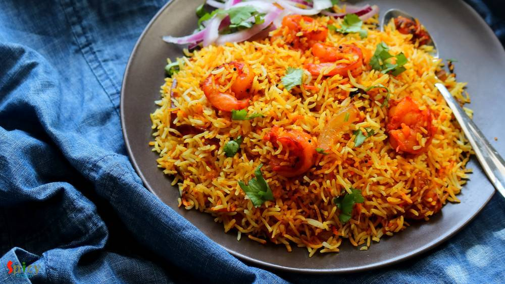

Simple and Easy Recipes
Posts on 'nonveg'

Nonveg Recipe
Nov 29, 2018
Tandoori Prawn Pulao is a delicious, spicy seafood rice pilaf dish in which Prawns will be marinated with yogurt, tandoori spices and other ingredients then will be tossed with long grain Basmati rice ... so so good! You can have this Prawn Pulao as it is or any kind of gravy on the side will work just fine. The recipe is simple and take very less time to cook. Try this in your kitchen and let me ...


Nonveg Recipe
Nov 22, 2018
Hariyali Chicken Kabab is a very delicious variety of kabab in which boneless chicken will be marinated in yogurt, ginger, garlic, mint-coriander paste and lot of fresh spices along with few other ingredients. You can definitely use chicken legs instead of boneless. I will recommend you to use chicken thighs instead of breast pieces, as thighs will come out much more juicy. Hariyali means green co ...
Oct 4, 2018
I made this Kosha Chingri Macher Kalia last weekend with some steamed rice and curry leaves tempered musur daal. He finished the lunch (read there wasn't any meat curry, not even leftover) with a big smile, that too on weekend. This spicy prawn curry worked like a magic. So, I had to share with you all the recipe of this Bengali delicacy - kosha chingrir kalia. Though the word 'kosha' suggests slo ...

Nonveg Recipe
May 23, 2016
Last week I was thinking that my blog doesn't have the recipe of 'mangsher ghugni' and being a Bengali I felt very awkward. There is no Bengali in the world who doesn't know about this dish ... yes, 'mutton ghugni' is that much famous. On special occasions or guest's arrival in evening, 'mangsher ghugni' is a very common item we Bengalis make. It's a Indian version of 'chili'. We make the curry of ...

Nonveg Recipe
Jun 13, 2016
We, Bengalis, love to eat fish in many forms. One of the popular snack of West Bengal is 'macher chop'. Spicy crumbled fish inside and crispy coating outside - scrumptious !! We both usually enjoy this snack in the evening along with a cup of tea or with a can of beer. Both combos are unbeatable. If you have to impress any Bengali ever in your life, just indulge him/her in 'Bikeler adda' (evening ...

Nonveg Recipe
May 1, 2018
'Sobji diye Macher Jhol' is nothing fancy in Bengali households. But we people have crazy obsession about it. Tollywood made a movie named 'Macher Jhol' ! So, being a Bengali I had to share this recipe with you all. You can make so many variations of this dish. Today I made it without onion and garlic, but you can surely add them if you want. One can also skip the vegetable part. Do try this easy ...